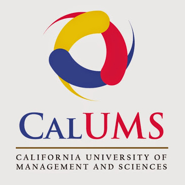

Dev Bootcamp, San Francisco, CA
Dev Bootcamp, San Francisco, CA
Mentor
May 2017 - Present
❖ Dev Bootcamp is a coding school where students get intensive training in web development. I work with students on topics such as: Ruby on Rails, JS, testing, jQuery, CSS, AJAX, OOP, and Git workflow.
❖ I am committed to helping students as they grapple with imposter syndrome, implicit biases, team dynamics, and pair programming with a diverse set of personalities.
USA Photocopy Services Inc., Costa Mesa, CA
Software Developer
Jan 2015 - Oct 2016
❖ Building and developing web applications with C# technology by using the best practice object-oriented design and systems architecture, as well as build testing framework to maintain code quality.
❖ Developed and debugging some other applications by using VB.Net, Ruby On Rails and SQL server for our employees system and for attorney services provider depending on the business requirements.
❖ Experience with software lifecycle, from the roadmap to the design/architecture to implementation and continuous iterative development and deployment.
❖ Researched, designed and implemented best practice solutions to new problems, practicing excellent verbal and written communication skills to build complex software systems that have been successfully delivered to customers.
California University of Management and Sciences, Anaheim, CA
IT Manager
July 2013- Jan 2015
❖ Provided remote and/or on-site support on all the university requirement (hardware, software, networking) .
❖ Provided remote and/or on-site user support for end user.
❖ Administration for the university system and providing support training for the new employee.
❖ Maintained and control the university database using SQL server
❖ Configure servers, workstations and desktops and apply appropriate operating systems.